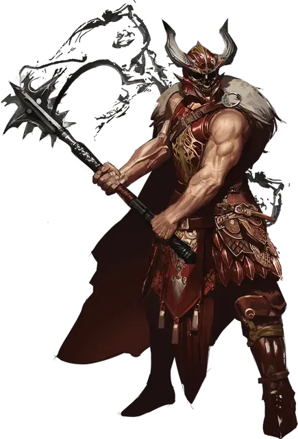

Верминаард
Verminaard
Средний Гуманоид (Человек, Жрец), законно-злой, именной НИП

Класс Доспеха 20 (латы +2)
Хиты 143 (22к8 + 44)
Скорость 30 футов
| мод | спас | ||
|---|---|---|---|
| СИЛ | 22 | +6 | +6 |
| ЛОВ | 13 | +1 | +1 |
| ТЕЛ | 15 | +2 | +2 |
| мод | спас | ||
|---|---|---|---|
| ИНТ | 16 | +3 | +3 |
| МДР | 18 | +4 | +10 |
| ХАР | 17 | +3 | +9 |
Навыки Восприятие +16, Религия +9
Иммунитет к урону огонь
Иммунитет к состояниям испуг, очарование
Чувства тёмное зрение 60 футов, пассивное Восприятие 26
Языки Общий, Бездны, Драконий
Опасность 17 (18000 опыта)
Бонус мастерства +6
Особенности
Драконическое командование. Когда дракон или существо с особенностью Драконья преданность в пределах 30 футов от Верминаарда совершает бросок атаки, существо может бросить 1к4 и добавить полученное число к результату атаки.
Легендарная стойкость (3/день). Если Верминаард проваливает спасбросок, он может вместо этого сделать спасбросок успешным
Специальное снаряжение. Верминаард носит латы +2 и владеет булавой Приносящая ночь [nightbringer], которая дает ему тёмное зрение, а также иммунитет к урону от огня и к состояниям очарования и испуга.
Действия
Мультиатака. Верминаард делает две атаки Приносящей ночью и использует Злое проклятье.
Приносящая ночь. Рукопашная атака оружием: +15 к попаданию, досягаемость 5 футов, одна цель. Попадание: 12 (1к6 + 9) дробящего урона плюс 10 (4к4) урона излучением. Если цель — существо, оно должно преуспеть в спасброске Телосложения Сл 20 или ослепнуть до начала следующего хода Верминаарда.
Злое проклятие. Верминаард произносит нечестивое слово, в результате чего на одно существо, которое Верминаард видит в пределах 60 футов от себя, нисходит нечестивый огонь. Существо должно совершить спасбросок Ловкости Сл 18, получив 11 (2к10) урона некротической энергией плюс 11 (2к10) урона излучением при провале или половину этого урона при успехе.
Использование Заклинаний. Верминаард накладывает одно из следующих заклинаний, не нуждаясь в никаких материальных компонентах, и Мудрость является для них базовой характеристикой(Сл спасброска от заклинания 18):
• Неограниченно: свет [light], чудотворство [thaumaturgy]
• 2/день каждое: порча [bane], ужас [fear], свобода перемещения [freedom of movement], высшее восстановление [greater restoration], удержание чудовища [hold monster], возрождение [revivify]
Бонусные действия
Благосклонность королевы драконов (5/день). Верминаард или одно существо, которое он может видеть в пределах 60 футов от себя, магически восстанавливает 17 (2к12 + 4) хитов.
Легендарные действия
Верминаард может совершить 3 легендарных действия, выбрав одно из перечисленных ниже. За один раз можно использовать только одно легендарное действие и только в конце хода другого существа. Верминаард восстанавливает потраченные легендарные действия в начале своего хода.
Тактическое передвижение. Верминаард перемещается на расстояние, не превышающее величину его скорости или приказывает скакуну, на котором он едет, переместиться на расстояние, не превышающее величину его скорости. Это движение не провоцирует атаки по возможности.
Пылкий удар (Стоит 2 действия). Верминаард совершает одну атаку Приносящей ночь. Если эта атака попадает, она наносит дополнительно 7 (2к6) дробящего урона.
Наложить заклинание (Стоит 3 действия). Верминаард накладывает заклинание.
Описание
Ариакас,
По воле Королевы Драконов я должен повиноваться, вот моя оценка вашего слуги, Верминаарда из Нидуса: Без изменений. Он по-прежнему остается крикливым мерзавцем, наделенным благословениями, полученными не столько умом, сколько кровью. Он превозносит благосклонность Такхизис и использует ее силу в манерах как легкомысленных, так и жестоких. В своих койках его солдаты шепчутся о его фанатизме и утверждают, что те, кто пропал из их рядов, были принесены в жертву на его тайном алтаре. Я не отвергаю такую возможность.
Хотя его работа продвигается, она является усилием инструмента, такого же тупого, как булава, которой он владеет.
Верминаард считает себя непобедимым, и я молю ее величество, чтобы я присутствовал при том, как она избавит его от этого заблуждения.
Я надеюсь, что вы найдете эти доклады познавательными.
Уголь
Повелитель драконов Верминаард возглавляет армию Красных Драконов — самую большую и самую могущественную из армий Королевы Драконов — с фанатичным рвением и безжалостной мощью. Хотя Верминаард был пророчески призван изгнать злые силы с земель Кринна, его соблазнила Такхизис и ее обещания славы. Развращенный Королевой Драконов, Верминаард стал одним из ее чемпионов и принял командование над самой свирепой из армий Драконов.
Чрезвычайная преданность Верминаарда Такхизис позволяет ему направлять её нечестивую силу на поле боя, поддерживая тех, кто находится под его командованием, и обрушивая на врагов проклятый огонь. Его возвышающийся силуэт часто окутан огнём Угля [ember], его спутника и советника красного дракона.
Драконья преданность
Блок статистики Верминаарда ссылается на особенность монстров Драконья преданность. Хотя эта особенность не проявляется ни у одного из существ в этом сборнике, вы найдете несколько монстров с особенностью Драконья преданность, терроризирующих земли Кринна в книге Dragonlance: Shadow of the Dragon Queen.
Приносящая ночь. Верминаард владеет булавой под названием Приносящая ночь [nightbringer], которую ему подарила Королева Драконов. Если персонажи победят Верминаарда и захотят использовать силу Приносящей ночи для себя, описание магического предмета булавы для персонажей игроков приведено здесь.